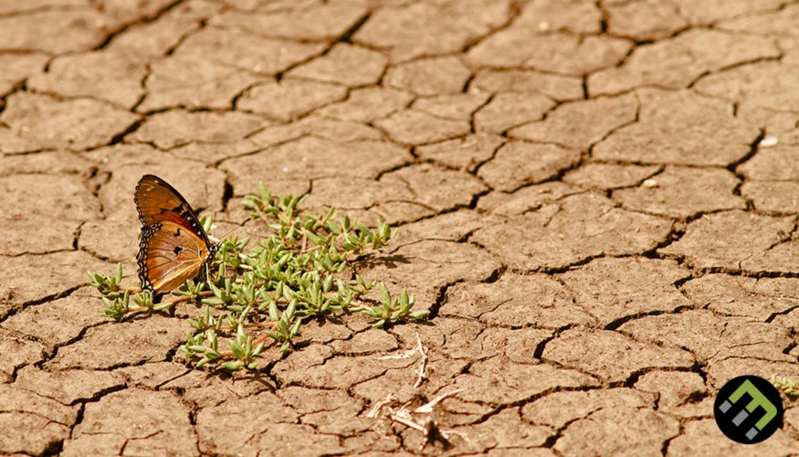
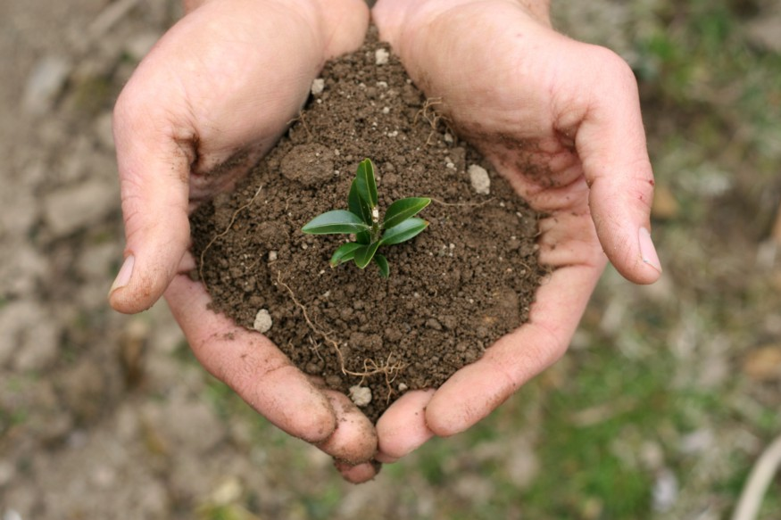
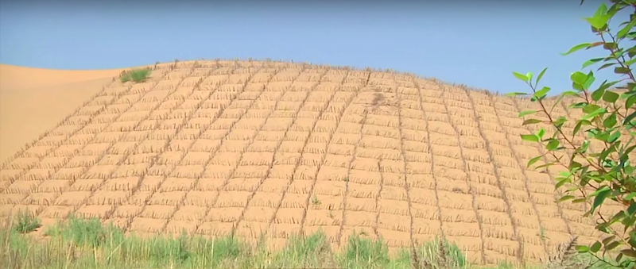
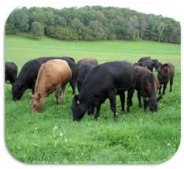

Techniques and countermeasures exist for mitigating or reversing the effects of desertification, and some possess varying levels of difficulty. For some, there are numerous barriers to their implementation. Yet for others, the solution simply requires the exercise of human reason.
One proposed barrier is that the costs of adopting sustainable agricultural practices sometimes exceed the benefits for individual farmers, even while they are socially and environmentally beneficial. Another issue is a lack of political will, and lack of funding to support land reclamation and anti-desertification programs.
Desertification is recognized as a major threat to biodiversity. Some countries have developed biodiversity action plans to counter its effects, particularly in relation to the protection of endangered flora and fauna.
Reforestation gets at one of the root causes of desertification and is not just a treatment of the symptoms. Environmental organizations work in places where deforestation and desertification are contributing to extreme poverty. There they focus primarily on educating the local population about the dangers of deforestation and sometimes employ them to grow seedlings, which they transfer to severely deforested areas during the rainy season.The Food and Agriculture Organization of the United Nations launched the FAO Drylands Restoration Initiative in 2012 to draw together knowledge and experience on dryland restoration. In 2015, FAO published global guidelines for the restoration of degraded forests and landscapes in drylands, in collaboration with the Turkish Ministry of Forestry and Water Affairs and the Turkish Cooperation and Coordination Agency.
The "Green Wall of China" is a high-profile example of one method that has been finding success in this battle with desertification. This wall is a much larger-scale version of what American farmers did in the 1930s to stop the great Midwest dust bowl. This plan was proposed in the late 1970s, and has become a major ecological engineering project that is not predicted to end until the year 2055. According to Chinese reports, there have been nearly 66 billion trees planted in China's great green wall. The green wall of China has decreased desert land in China by an annual average of 1,980 square km. The frequency of sandstorms nationwide have fallen 20% due to the green wall. Due to the success that China has been finding in stopping the spread of desertification, plans are currently be made in Africa to start a "wall" along the borders of the Sahara desert as well to be financed by the United Nations Global Environment Facility trust.
In 2007 the African Union started the Great Green Wall of Africa project in order to combat desertification in 20 countries. The wall is 8,000 km wide, stretching across the entire width of the continent and has 8 billion dollars in support of the project. The project has restored 36 million hectares of land, and by 2030 the initiative plans to restore a total of 100 million hectares.The Great Green Wall has created many job opportunities for the participating countries, with over 20,000 jobs created in Nigeria alone.
Techniques focus on two aspects: provisioning of water, and fixation and hyper-fertilizing soil. Fixating the soil is often done through the use of shelter belts, woodlots and windbreaks. Windbreaks are made from trees and bushes and are used to reduce soil erosion and evapotranspiration. They were widely encouraged by development agencies from the middle of the 1980s in the Sahel area of Africa.
Some soils (for example, clay), due to lack of water can become consolidated rather than porous (as in the case of sandy soils). Some techniques as zaï or tillage are then used to still allow the planting of crops.Waffle gardens can also help as they can provide protection of the plants against wind/sandblasting, and increase the hours of shade falling on the plant.
Another technique that is useful is contour trenching. This involves the digging of 150 m long, 1 m deep trenches in the soil. The trenches are made parallel to the height lines of the landscape, preventing the water from flowing within the trenches and causing erosion. Stone walls are placed around the trenches to prevent the trenches from closing up again. The method was invented by Peter Westerveld.
Enriching of the soil and restoration of its fertility is often achieved by plants. Of these, leguminous plants which extract nitrogen from the air and fix it in the soil, succulents (such as Opuntia), and food crops/trees as grains, barley, beans and dates are the most important. Sand fences can also be used to control drifting of soil and sand erosion.
Another way to restore soil fertility is through the use of nitrogen-rich fertilizer. Due to the higher cost of this fertilizer, many smallholder farmers are reluctant to use it, especially in areas where subsistence farming is common. Several nations, including India, Zambia, and Malawi have responded to this by implementing subsidies to help encourage adoption of this technique.
Some research centres (such as Bel-Air Research Center IRD/ISRA/UCAD) are also experimenting with the inoculation of tree species with mycorrhiza in arid zones. The mycorrhiza are basically fungi attaching themselves to the roots of the plants. They hereby create a symbiotic relation with the trees, increasing the surface area of the tree's roots greatly (allowing the tree to gather much more nutrient from the soil).
The bioengineering of soil microbes, particularly photosynthesizers, has also been suggested and theoretically modeled as a method to protect drylands. The aim would be to enhance the existing cooperative loops between soil microbes and vegetation.
As there are many different types of deserts, there are also different types of desert reclamation methodologies. An example for this is the salt flats in the Rub' al Khali desert in Saudi Arabia. These salt flats are one of the most promising desert areas for seawater agriculture and could be revitalized without the use of freshwater or much energy.
Farmer-managed natural regeneration (FMNR) is another technique that has produced successful results for desert reclamation. Since 1980, this method to reforest degraded landscape has been applied with some success in Niger. This simple and low-cost method has enabled farmers to regenerate some 30,000 square kilometers in Niger. The process involves enabling native sprouting tree growth through selective pruning of shrub shoots. The residue from pruned trees can be used to provide mulching for fields thus increasing soil water retention and reducing evaporation. Additionally, properly spaced and pruned trees can increase crop yields. The Humbo Assisted Regeneration Project which uses FMNR techniques in Ethiopia has received money from The World Bank's BioCarbon Fund, which supports projects that sequester or conserve carbon in forests or agricultural ecosystems.
Restoring grasslands store CO2 from the air as plant material. Grazing livestock, usually not left to wander, eat the grass and minimize grass growth. A method proposed to restore grasslands uses fences with many small paddocks and moving herds from one paddock to another after a day or two in order to mimic natural grazers and allowing the grass to grow optimally. Proponents of managed grazing methods estimate that increasing this method could increase carbon content of the soils in the world's 3.5 billion hectares of agricultural grassland and offset nearly 12 years of CO2 emissions.
One proponent of managed grazing, Allan Savory, as part of holistic management, claims that keeping livestock tightly packed on smaller plots of land, meanwhile rotating them to other small plots of land will reverse desertification; range scientists have however not been able to experimentally confirm his claims.